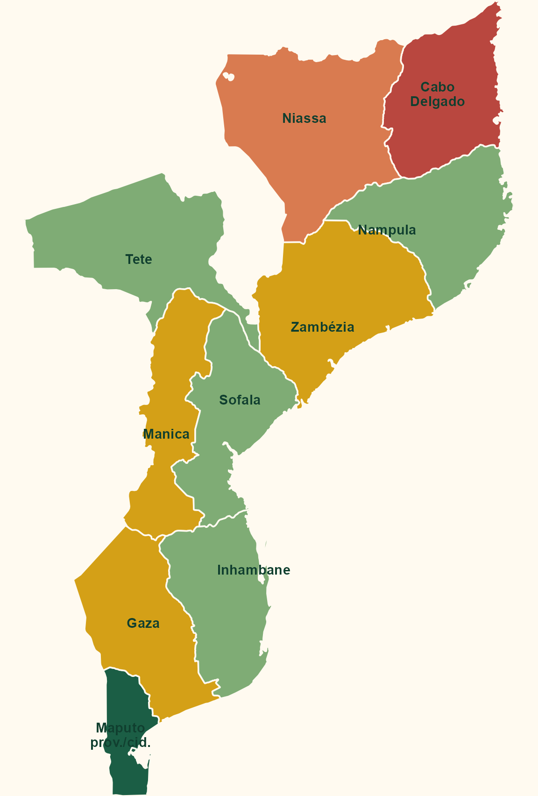

Fontes abertas, cobertura de Internet e limites de vigilância baseada na web
2027-02-05
Não há sinal claro de uma base pública oficial específica sobre Koro.
MISAU / SIS-MA
Sistema nacional de informação em saúde, baseado em DHIS2, com dados agregados, vigilância e módulos de programas.
INS / vigilância
Instituto Nacional de Saúde, SIGILA e unidades de inquéritos/vigilância para eventos laboratoriais e epidemiológicos.
INE
Censos, projeções, estatísticas provinciais e denominadores populacionais para interpretar desigualdades territoriais.
INCM / INTIC
Regulação, qualidade de telecomunicações, indicadores TIC, cobertura e governança digital.
Implicação para Koro: sinais digitais tendem a super-representar centros urbanos, homens, pessoas com maior renda/escolaridade, usuários de smartphone e áreas cobertas por operadores móveis.

Norte
Niassa: muito baixo. Cabo Delgado: muito baixo e instável. Nampula: médio nos centros urbanos, baixo no interior.
Centro
Zambézia e Manica: baixo fora dos centros. Tete e Sofala: médio em corredores urbanos, mineração e Beira; baixo no interior.
Sul
Gaza: baixo fora de Xai-Xai. Inhambane: médio em centros e áreas turísticas. Maputo província e Cidade de Maputo: maior sinal digital.
Em 2025, as maiores audiências observáveis por ferramentas de publicidade eram:
Facebook
4,10 milhões de usuários; principal plataforma para busca ampla e grupos locais.
TikTok
3,70 milhões de adultos alcançáveis por anúncios; útil para vídeos curtos, rumor e linguagem popular.
Instagram / LinkedIn / X
729 mil, 880 mil membros e 150 mil usuários, respectivamente; mais segmentados.
Restrições práticas
GDELT é uma base global de notícias online: monitora matérias publicadas na web, identifica eventos, temas, atores, lugares e disponibiliza consultas por API.
Para Koro em Moçambique, funciona como camada de imprensa e web aberta, não como vigilância de casos.
Possibilidades
Koro, variantes locais e termos associados;stories e events.Limitações
1. Vocabulário vivo
Começar com Koro e expandir termos por província, idioma, metáforas locais e expressões usadas pela imprensa e redes.
2. Fontes em camadas
GDELT + busca web + páginas públicas + TikTok/YouTube + imprensa local + fontes institucionais e humanitárias.
3. Triangulação territorial
Separar Maputo/sul urbano, centros de Nampula/Zambézia e norte rural/conflito para não confundir silêncio digital com ausência de evento.
4. Ética e segurança
Evitar identificação de pessoas e comunidades; tratar rumores como risco social, não como confirmação clínica.
Principal conclusão: buscar Koro na Internet em Moçambique é menos uma pergunta sobre “onde há casos” e mais uma pergunta sobre onde há sinal digital observável.
Observatório de Clima e Saúde | Fiocruz